DEPARTAMENTO DE DESARROLLO PRODUCTIVO Y TECNOLÓGICO
LICENCIATURA EN SISTEMAS
Asignatura: Desarrollo de Software en Sistemas Distribuidos
Trabajo práctico: Museo Virtual Interactivo. Entrega 3: Mensajería asíncrona con Apache Kafka
Docente a cargo: Diego Andrés Azcurra
Docente: Julián Tomczak
Día y horario de cursada: Miércoles 8 a 14 hs.
Año de cursada: 2026
Grupo: A
Alumnos: Luciano Aizar Assefh
Tomas Alejandro Diaz De Maio
Franco Nordinelli
Francisco Ian Patejim
Fecha de Entrega: 1/11/2026
Las Entregas 1 y 2 quedan como estaban: el frontend sigue usando el backend por REST y GraphQL, y las funcionalidades de recorridos, comparación, recomendaciones y exploración siguen entrando por el API Gateway y resolviéndose por gRPC. No reemplazamos ninguna de esas comunicaciones.
Lo nuevo es que las operaciones sobre eventos que ya existían (alta, modificación y cancelación, por REST) ahora también publican una novedad en Kafka. Quien hace la operación no espera a nadie: el evento se guarda, el usuario recibe su respuesta, y la novedad viaja después. Dos consumidores independientes, cada uno en su propio proceso, la reciben: uno genera las notificaciones de los visitantes afectados y el otro registra el historial de actividad. La aplicación web consulta lo que los consumidores guardaron, nunca los mensajes del broker.
| Componente | Responsabilidad |
|---|---|
Productor: módulo eventos del backend | Al crear, modificar o borrar un evento guarda, en la misma transacción, la operación y la novedad en la tabla mensajes_salientes. La novedad lleva la foto del evento antes y después y la lista de campos que cambiaron. No conoce a los consumidores. |
| Publicador del outbox (backend) | Cada segundo toma las novedades pendientes de mensajes_salientes, las publica en el topic eventos.novedades y las marca publicadas recién cuando Kafka confirma la escritura. |
| Kafka | Transporta las novedades. Cada consumidor lee el mismo topic con su propio grupo, así que cada uno recibe todas las novedades sin afectar al otro. |
| Consumidor de notificaciones (proceso propio) | Decide a quién avisar y guarda una notificación por destinatario: en una modificación o cancelación, a los inscriptos del evento; en un alta, a los visitantes que tienen ese movimiento entre sus preferidos, que consulta por gRPC al UsuariosService de la Entrega 2. |
| Consumidor de auditoría (proceso propio) | Guarda cada novedad en el historial de actividad, con los datos anteriores y posteriores. |
| Consumidor de fallidos (dentro de cada proceso consumidor) | Lee la cola de mensajes fallidos (eventos.novedades.DLT) y los guarda en mensajes_fallidos para que un administrador los revise y los reprocese. |
| Consultas (backend, REST) | Notificaciones del visitante, historial y estado de la mensajería. Leen solo las tablas que escribieron los consumidores. |
Consumidores en procesos separados, mismo código. Los dos consumidores son el mismo backend lanzado con otro perfil (consumidor-notificaciones y consumidor-auditoria): sin servidor web, sin servidor gRPC y escuchando solo su grupo de Kafka. Así son procesos que se levantan, se caen y se reinician por separado (lo mostramos en las pruebas apagando uno), sin duplicar el modelo de datos ni la configuración. Es la misma idea de la Entrega 1: un backend modular, ahora desplegado en tres procesos con responsabilidades distintas.
Outbox en vez de publicar al terminar. Si el backend publicara en Kafka después de guardar el evento, una caída justo entre las dos cosas, o Kafka caído, perdería la novedad sin que nadie se entere. Con el outbox, la novedad queda guardada en la misma transacción que el evento: o se guardan las dos o ninguna. Si Kafka no está, la novedad espera en la tabla y el publicador la reintenta. Además el usuario nunca espera a Kafka para que se cree su evento.
Foto del evento en el mensaje. El mensaje lleva el estado completo del evento, incluidos sus inscriptos. Así los consumidores no necesitan consultar las tablas del módulo de eventos, y la cancelación (que borra el evento con sus inscripciones, como en la Entrega 1) todavía puede avisar a quienes estaban anotados.
Agregar un consumidor no toca el productor. El productor publica en un topic y no sabe quién lo lee. Un consumidor nuevo es un grupo nuevo sobre el mismo topic.
| Situación | Cómo la tratamos |
|---|---|
| a. Mensajes duplicados | Kafka entrega cada mensaje al menos una vez: puede repetirlo si un consumidor se cae después de guardar y antes de confirmar. Cada mensaje tiene un idMensaje (UUID) y cada consumidor guarda (consumidor, idMensaje) en mensajes_procesados en la misma transacción que su efecto. Si el mensaje ya está, no hace nada. Además, las notificaciones son únicas por (idMensaje, usuario) y el historial por idMensaje. |
| b. Errores de procesamiento | Si procesar un mensaje falla, se reintenta 3 veces con 2 segundos de espera. Si sigue fallando, el mensaje va a eventos.novedades.DLT y queda guardado en mensajes_fallidos con el error; nunca se descarta en silencio. Los mensajes inválidos (sin idMensaje, JSON roto, versión desconocida) van directo, porque reintentarlos no sirve. Un administrador puede reprocesar un fallido desde la pantalla de mensajería. |
| c. Persistencia y confirmación | Un mensaje se considera procesado cuando la transacción del consumidor (su efecto más la fila de mensajes_procesados) hizo commit; recién ahí se confirma el offset en Kafka. Si el proceso se corta antes del commit, no queda nada guardado y Kafka vuelve a entregar el mensaje. Si se corta entre el commit y la confirmación, Kafka lo entrega de nuevo y la idempotencia lo ignora. Del lado del productor, la novedad se confirma como publicada solo cuando Kafka acusa recibo con todas las réplicas (acks=all). |
| d. Desacoplamiento | El productor solo conoce el topic y el formato del mensaje. Los consumidores no se conocen entre sí, cada uno tiene su grupo y su tabla, y un consumidor caído no frena al otro ni al backend. |
| e. Consistencia eventual | Las notificaciones y el historial aparecen unos instantes después de la operación. La pantalla de mensajería (GET /api/mensajeria/consistencia) compara las novedades publicadas con las procesadas por cada consumidor, muestra las que faltan y dice si todo está al día. |
| Funcionalidad | Entrega | Cómo se accede |
|---|---|---|
| Autenticación, catálogo, eventos, reporte y Excel | 1 | REST y GraphQL, backend :8000 |
| Recorridos, comparación, recomendaciones y exploración | 2 | REST en el gateway :8080, gRPC entre servicios |
| Publicación de novedades de eventos | 3 | Automática al crear, modificar o borrar un evento (REST de la Entrega 1) |
| Notificaciones del visitante | 3 | REST /api/notificaciones, datos del consumidor de notificaciones |
| Historial de actividad | 3 | REST /api/auditoria/eventos, datos del consumidor de auditoría |
| Estado de la mensajería y reproceso de fallidos | 3 | REST /api/mensajeria/... |
En verde, el camino de publicación: el módulo de eventos guarda la novedad junto con el evento y el publicador la manda a Kafka. En azul, los dos consumidores, cada uno en su proceso y con su grupo, que leen el mismo topic y escriben solo sus tablas. La aplicación web consulta esas tablas por REST. El gateway y el motor de la Entrega 2 no participan del flujo de mensajería y siguen igual.
Los pasos del publicador ocurren después de que el curador ya tiene su respuesta. Si Kafka no está disponible, el publicador no marca la novedad y la reintenta en la próxima vuelta. Cada consumidor confirma el offset recién después de su commit en la base: una caída antes de eso hace que Kafka vuelva a entregar el mensaje, y la fila de mensajes_procesados evita procesarlo dos veces.
| Topic | Particiones | Clave | Productor | Consumidores (grupo) |
|---|---|---|---|---|
eventos.novedades | 3 | id del evento | Publicador del outbox del backend; reproceso de fallidos | Notificaciones (museo-notificaciones), auditoría (museo-auditoria) |
eventos.novedades.DLT | 1 | la del mensaje original | Manejador de errores de cada consumidor | Fallidos (museo-fallidos) |
La clave es el id del evento para que todas las novedades de un mismo evento caigan en la misma partición y se procesen en el orden en que ocurrieron. Con tres particiones, novedades de eventos distintos se pueden procesar en paralelo.
| Campo | Tipo | Obligatorio | Significado |
|---|---|---|---|
idMensaje | string (UUID) | sí | Identificador único del acontecimiento; base de la idempotencia. |
versionEsquema | int | sí | Versión del formato (1). Permite evolucionarlo sin romper consumidores. |
tipo | string | sí | ALTA, MODIFICACION o CANCELACION. |
idEvento | long | sí | Evento afectado. |
tituloEvento | string | sí | Título del evento. |
fechaHoraEvento | string (fecha y hora local ISO) | sí | Cuándo es el evento. |
fechaOperacion | string (instante ISO, UTC) | sí | Cuándo se hizo la operación. |
idUsuarioResponsable | long | no | Usuario que hizo la operación. |
nombreUsuarioResponsable | string | no | Su nombre, para mostrarlo sin consultar la tabla de usuarios. |
eventoAnterior | Evento | no | Estado antes de la operación (no está en un alta). |
eventoPosterior | Evento | no | Estado después (no está en una cancelación). |
camposModificados | string[] | sí | Campos que cambiaron en una modificación. |
Evento: id (long), titulo, descripcion, tipo (VISITA_GUIADA, TALLER o CHARLA), fechaHora (fecha y hora local ISO), duracionMinutos (int), cupoMaximo (int), movimiento (string, opcional), idCurador (long), nombreCurador y idsInscriptos (long[]).
Inscribirse o desinscribirse no publica una modificación: no cambia el evento. Una edición que no cambia ningún campo tampoco publica nada. En el anexo hay mensajes reales de los tres tipos, leídos del topic durante las pruebas.
| Tipo | Quién recibe la notificación |
|---|---|
ALTA | Los visitantes que tienen el movimiento del evento entre sus preferidos (preferencias de la Entrega 2). Si el evento no tiene movimiento, nadie. |
MODIFICACION | Los inscriptos del evento. |
CANCELACION | Quienes estaban inscriptos cuando se canceló. |
Cada visitante consulta solo sus propias notificaciones: el backend las filtra por el usuario del token. El historial y la pantalla de mensajería son solo para curador y administrador, y reprocesar un fallido, solo para administrador.
La Entrega 3 agrega cinco tablas y no modifica las existentes: el campo movimiento de eventos ya estaba en la Entrega 2 y ahora además se carga desde el formulario de eventos. Cada tabla nueva la escribe un único componente.
| Tabla | La escribe | Para qué |
|---|---|---|
mensajes_salientes | Productor (módulo eventos) y publicador | Outbox: cada novedad se guarda en la misma transacción que el evento. fecha_publicacion en null significa que todavía no la confirmó Kafka; intentos y ultimo_error registran los fallos al publicar. Es también la referencia de "lo publicado" para la consistencia. |
notificaciones | Consumidor de notificaciones | Una fila por visitante y novedad. La restricción única (id_mensaje, id_usuario) impide duplicarla aunque el mensaje llegue dos veces. |
historial_actividad | Consumidor de auditoría | Una fila por novedad (id_mensaje es la clave), con la foto anterior y posterior del evento en JSON y los campos que cambiaron. |
mensajes_procesados | Cada consumidor | Control de procesamiento: (consumidor, id_mensaje) se inserta en la misma transacción que el efecto. Es la base de la idempotencia y de la consistencia por consumidor. |
mensajes_fallidos | Consumidor de fallidos (y el reproceso, que cambia el estado) | Lo que llegó al DLT: contenido original, consumidor que falló, error y estado. |
El resto del modelo queda igual que en la Entrega 2:
| Para qué | Tecnología | Por qué |
|---|---|---|
| Mensajería | Apache Kafka 3.7 en modo KRaft (sin Zookeeper) | Elegimos Kafka sobre RabbitMQ por cómo encaja con lo que pide la consigna. Un topic de Kafka es un registro que se conserva: cada consumidor lleva su propia posición (offset), así que agregar un consumidor nuevo es agregar un grupo, sin tocar el productor ni los demás consumidores, y un consumidor que estuvo caído retoma desde donde quedó. En RabbitMQ habría que declarar un exchange con una cola por consumidor y, si una cola no existe cuando se publica, ese consumidor pierde los mensajes. Además Kafka solo necesita Java para correr: lo levantamos sin Docker, igual que la base. |
| Integración con Spring | Spring for Apache Kafka | @KafkaListener para los consumidores, KafkaTemplate para publicar, y el manejador de errores con reintentos y envío a la cola de fallidos (DefaultErrorHandler y DeadLetterPublishingRecoverer) sin escribir esa lógica a mano. |
| Formato de los mensajes | JSON con versión de esquema | Se lee a simple vista en las herramientas de Kafka y en los logs, y lo genera Jackson, que ya usaba el backend. El campo versionEsquema deja cambiar el formato más adelante. |
| Confiabilidad | Patrón outbox, acks=all, productor idempotente, confirmación manual de offsets por registro | Es la combinación que da "al menos una vez" de punta a punta sin perder mensajes; los duplicados que eso genera los absorbe la idempotencia de los consumidores. |
| Destinatarios de un alta | gRPC (UsuariosService de la Entrega 2) | El consumidor de notificaciones pregunta qué visitantes prefieren ese movimiento sin leer las tablas de usuarios, igual que hacía el gateway. |
| Pruebas | JUnit 5 con Kafka embebido (spring-kafka-test) | Levanta un broker real dentro del test, sin Docker, para probar publicación, consumo asíncrono, duplicados, errores y reproceso. |
| Base de datos, backend y frontend | MariaDB, Spring Boot 3.2, React con TypeScript | Los mismos de las entregas anteriores; las tablas nuevas se agregan al mismo esquema, cada una con un único componente que la escribe. |
El código está en el repositorio público https://github.com/aizarassefh/sist-dist-tp-grupo-a. El README explica cómo levantar la base, Kafka (con o sin Docker), el backend, los dos consumidores, el gateway, el motor y el frontend.
Las pruebas se hicieron el 01/11/2026 con todos los procesos reales en una misma máquina: Kafka 3.7 sin Docker, MariaDB, el backend principal, los dos consumidores en procesos propios, el gateway, el motor NestJS y el frontend.
| Proyecto | Pruebas | Qué verifican de esta entrega |
|---|---|---|
| Backend | 124 (123 pasan y 1 omitida a propósito, la misma de la Entrega 2) | Los 105 tests de las Entregas 1 y 2 sin cambios, y 19 nuevos. SalidaDeNovedadesIntegrationTest: crear, editar, cambiar el cupo y borrar dejan la novedad correcta en el outbox, con la foto anterior y posterior, los inscriptos y el responsable; una edición sin cambios no genera nada. MensajeriaKafkaIntegrationTest, con un Kafka embebido real: la novedad llega de forma asíncrona a los dos consumidores, un duplicado no se procesa dos veces, un mensaje inválido termina en fallidos, un fallido reprocesado se procesa y la consistencia queda en verde. MensajeriaSeguridadIntegrationTest: cada visitante ve solo sus notificaciones y los roles se respetan. PerfilConsumidorSinWebTest: un proceso consumidor arranca sin servidor web y sin cargar datos. UsuariosGrpcVisitantesPorMovimientoTest: la operación gRPC nueva. |
| Gateway | 24 | Sin cambios: la Entrega 2 sigue igual. |
| Motor NestJS | 28 | Sin cambios. |
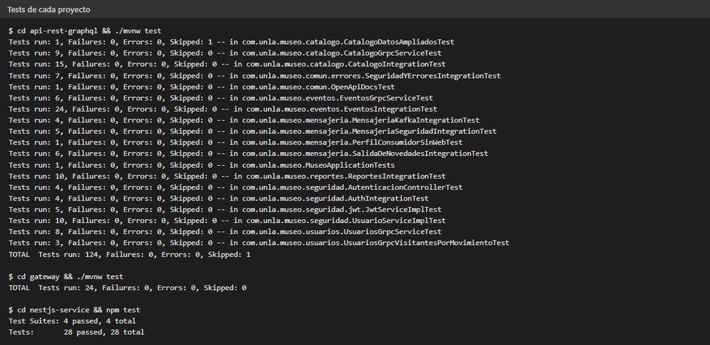
Tests de los tres proyectos.
pruebas/e2e-kafka.mjs usa los procesos reales. Crea, modifica y cancela un evento por la API de la Entrega 1 y espera a que los consumidores, en otros procesos, generen la notificación y el historial correspondientes. Inyecta directamente en Kafka un mensaje repetido tres veces y uno inválido, y termina verificando la consistencia entre lo publicado y lo procesado.
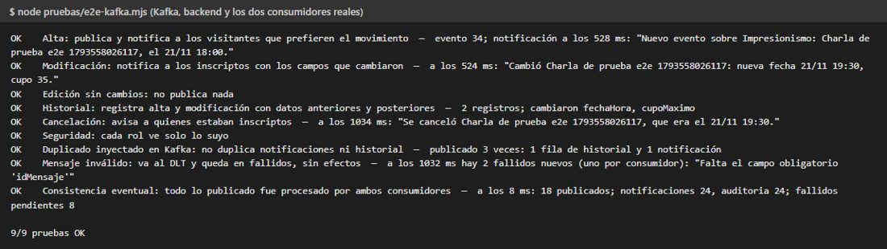
Nueve de nueve. Las notificaciones aparecen entre medio segundo y un segundo después de la operación.
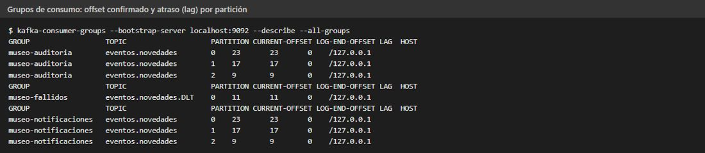
Los tres grupos de consumo leen el mismo topic con su propio offset; con todo procesado, el atraso (lag) es cero en cada partición.
Tres escenarios, cada uno con el estado de la mensajería en cada paso:
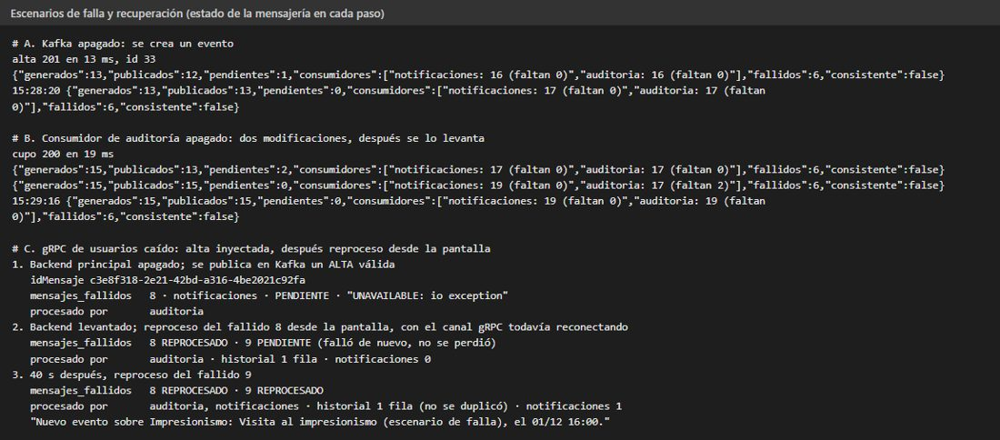
Estado de la mensajería en cada paso de los tres escenarios.
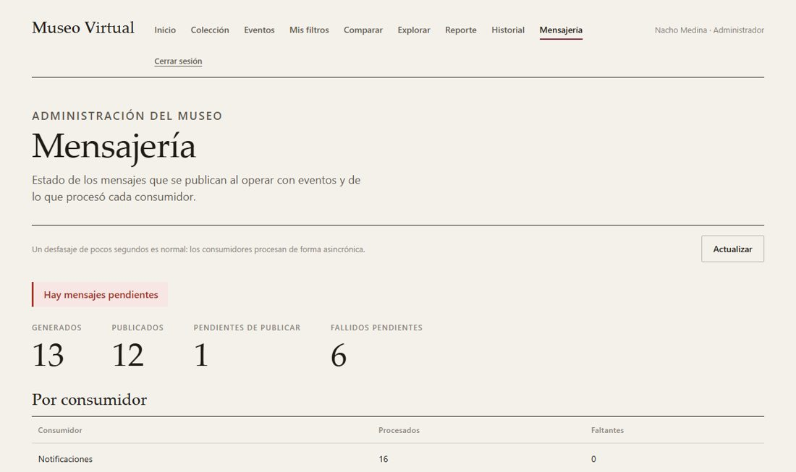
A: con Kafka apagado hay una novedad pendiente de publicar.
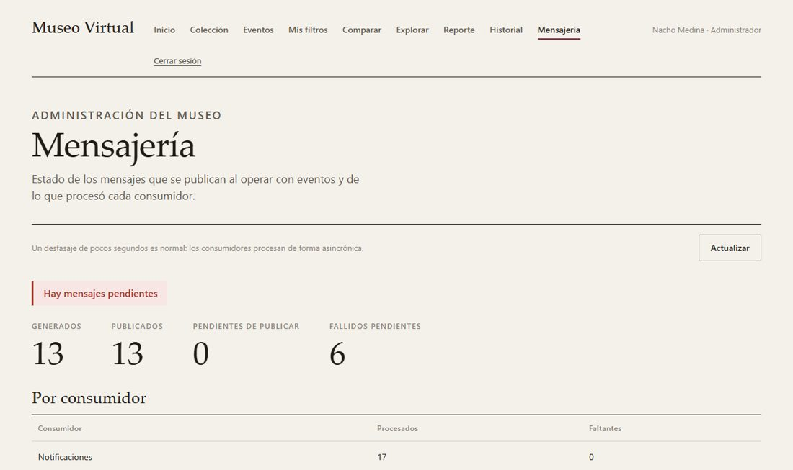
A: al volver Kafka no queda nada pendiente.
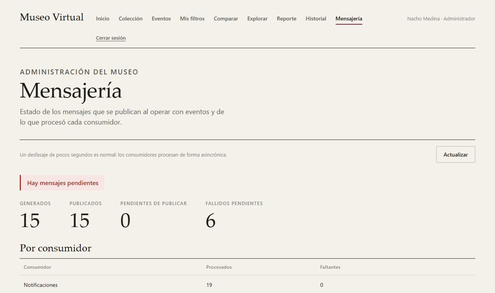
B: con el consumidor de auditoría apagado, le faltan dos novedades.
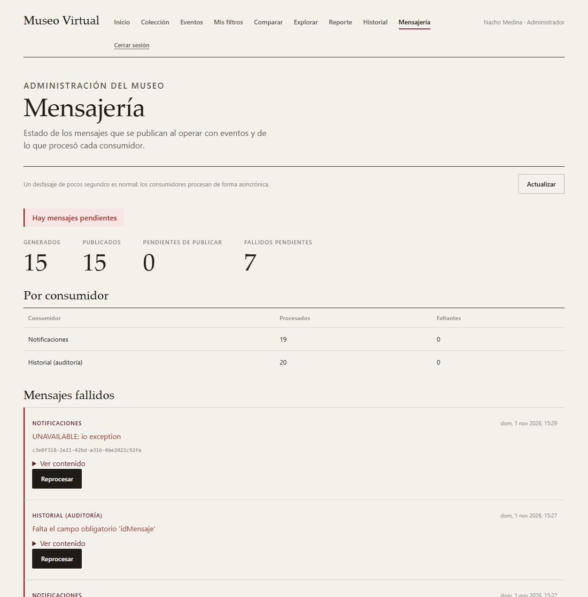
C: el alta que no se pudo procesar, en fallidos, con el error y el botón para reprocesarla.
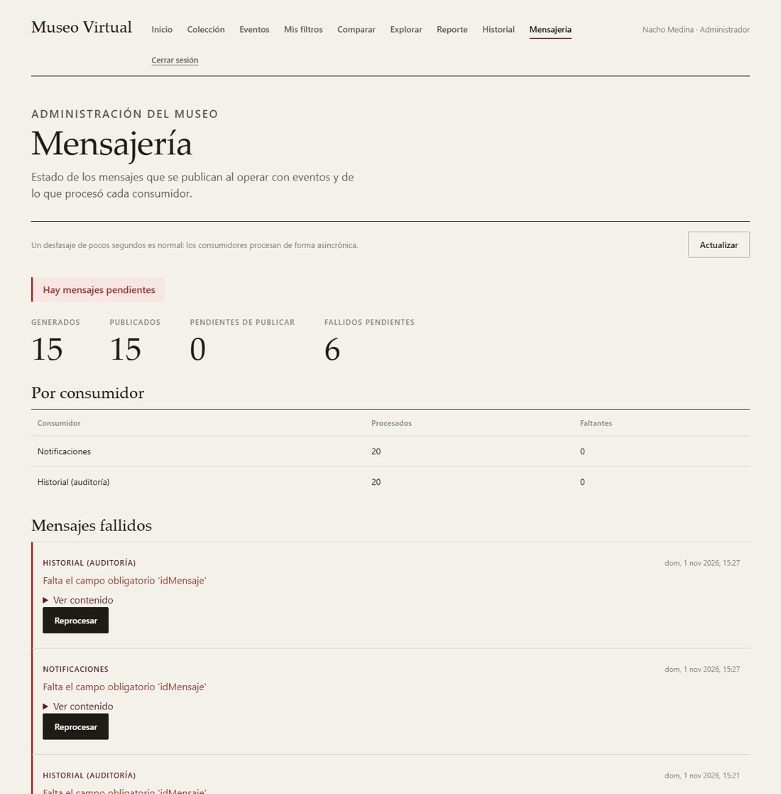
C: después del reproceso.
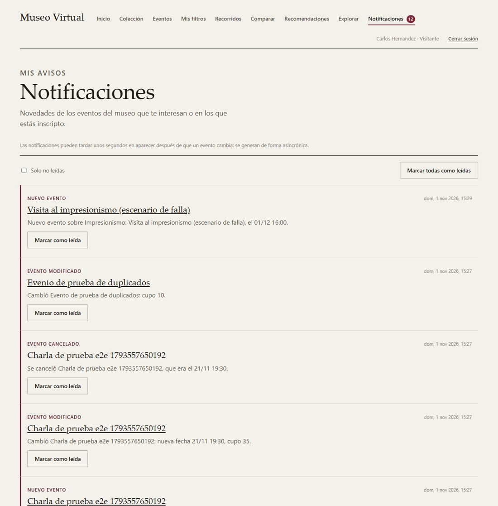
Notificaciones del visitante, con el contador de no leídas: alta de un evento de su movimiento preferido, modificación y cancelación de eventos en los que estaba inscripto.
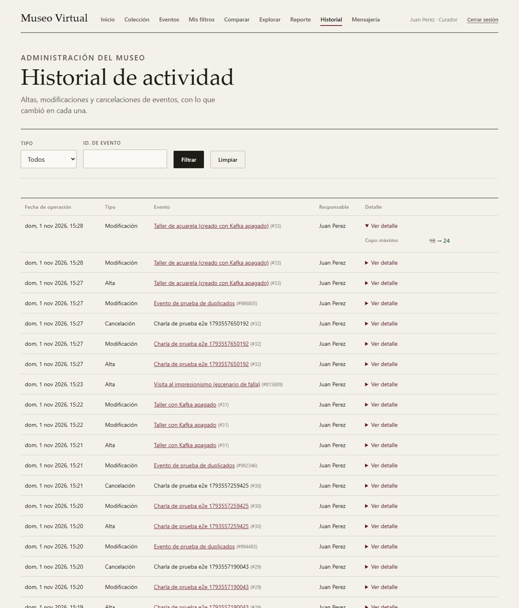
Historial de actividad (curador): cada operación con su responsable, y el detalle de lo que cambió.
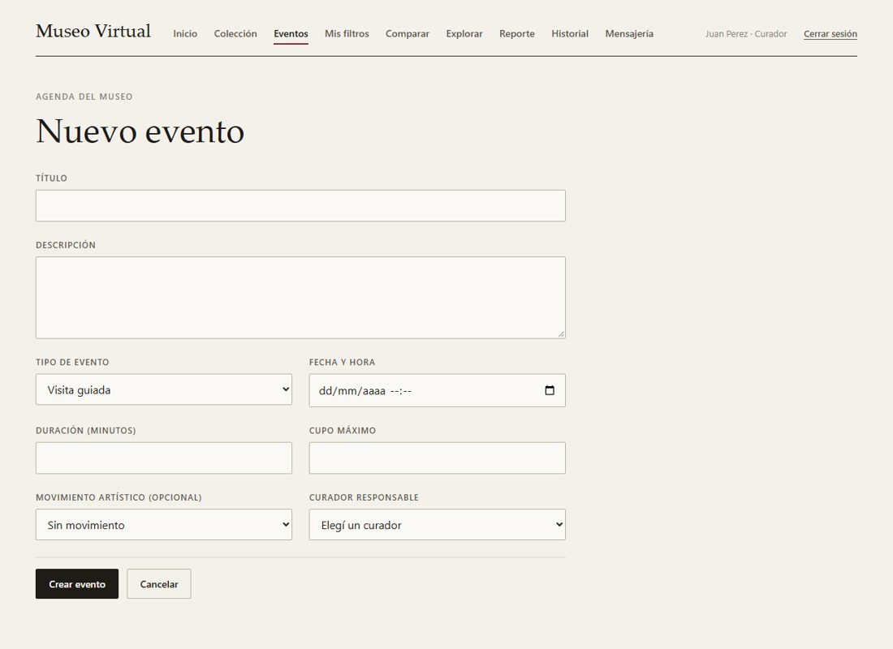
Formulario de eventos con el movimiento artístico, que define a quién se le avisa de un alta.
Con la mensajería funcionando, la prueba de punta a punta de la Entrega 2 da 14 de 14: login, catálogo y reporte por GraphQL, eventos y Excel por REST, y las cuatro funcionalidades por el gateway y gRPC.
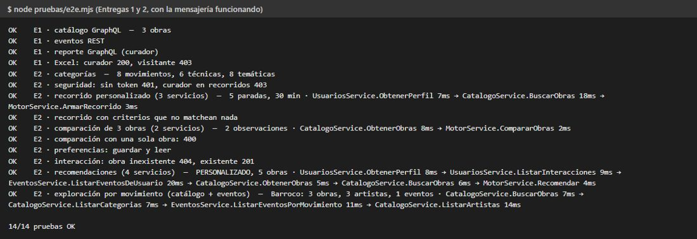
Prueba de punta a punta de las Entregas 1 y 2.
Enlace: [completar con el enlace al video]
Grupo A.
| Integrante | Tareas en la Entrega 3 |
|---|---|
| Luciano Aizar Assefh | Primera integración de Kafka en el backend (publicación de novedades y su consumo), servicio de Kafka en Docker y migración del frontend a TypeScript. |
| Tomas Alejandro Diaz De Maio | Primera versión del historial de auditoría mediante Kafka, con su consumidor y su pantalla. |
| Franco Nordinelli | Validación del identificador de los mensajes y grupos de consumo explícitos, registro de los datos anteriores y posteriores de cada modificación, y primeras pruebas de idempotencia y auditoría. |
| Francisco Ian Patejim | Diseño definitivo de la mensajería (contrato de los mensajes y topics), outbox, consumidores en procesos independientes, notificaciones por visitante, cola de fallidos con reproceso, consistencia, Kafka sin Docker, pruebas de punta a punta y escenarios de falla. |